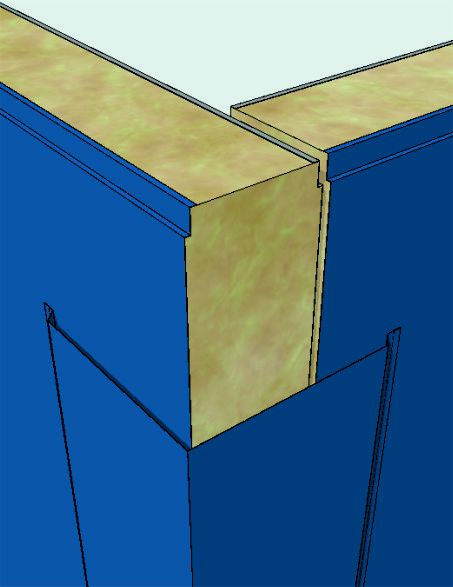

Широко применяемая стандартная ширина
1190 и 1000 мм
Внешнее дополнение к Archicad
Превращает стеновой контур
в сэндвич-панели
по заданным параметрам за пару кликов
SandwichCreator - приложение для автоматической раскладки сэндвич-панелей и фасонных элементов в Archicad.
Для подключения к Archicad требуется Tapir 2.0.0
Windows x64Версия 1.6.6
Модель и узлы01 / 04

01
Исходные стены
по ID или по выборке
02
Параметризация
высота и толщина профиля,
цвет, ширина шва, длина панелей
03
Результат
с возможностью редактирования
Раскладка сэндвич-панелей в 3D за пару кликов

Номенклатура стандартных толщин
от 50 до 200 мм
Учитываются проёмы.
Используются стандартные фасонные элементы
Преимущества
Исходный контур здания не изменяется. Зазоры между панелями задаются диапазоном.
Одинаковые длины и профили получают одинаковый ID. После ручных правок ID можно переназначить.
Цвет, высота, толщина и обозначение ГОСТ сохраняются в свойствах панелей. Ведомость по ГОСТ выгружается в Excel.

Укажите ID исходных стен или используйте текущую выборку в Archicad

SandwichCreator 1.6.6
Раскладка сэндвич-панелей в Archicad за пару кликов в 3D с выгрузкой ведомости по ГОСТ
Windows x64
Скачать приложение EXE · 13,0 МБ
С какими версиями Archicad'а совместимо приложение?
Приложение работает с Archicad 27 и Tapir 2.0.0. Совместимость с другими версиями не проверялась.
Можно ли выбрать свой RAL?
Да. В приложении есть 15 предложенных цветов и ручной ввод номера из встроенного справочника RAL Classic. Экранный образец цвета приблизительный.
Можно ли выгрузить актуальную ведомость после ручного редактирования?
Кнопка «Переназначить ID панелей» повторно проверяет текущие профили и 3D-длины, округляет длины до сантиметров и группирует одинаковые панели.
С чего лучше начать проверку?
Сохраните исходный проект и попробуйте сначала на небольшой части плана. Перед созданием элементов проверьте предварительную раскладку, высоту стен и таблицу с типоразмерами. Удаление исходных стен можно отключить в приложении.